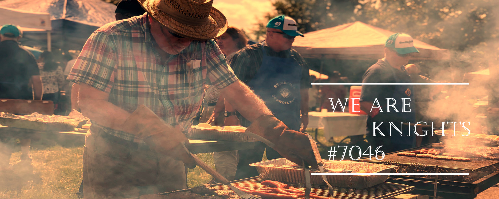

Let's get grooving and travel back in time to music and dancing from the 50s, 60s and 70s. Dust off your retro costumes and dance the night away to "Hippy Hippy Shake", "The Twist" and scores of goldies.
The event is scheduled for Saturday, February 03, 2024 from 7:00pm to 11:00pm. Stay tuned for details.
Saint Patrick's Day was made an official Christian feast day in the early 17th century and is observed by the Catholic Church, the Anglican Communion (especially the Church of Ireland), the Eastern Orthodox Church, and the Lutheran Church. The day commemorates Saint Patrick and the arrival of Christianity in Ireland, and celebrates the heritage and culture of the Irish in general. Celebrations generally involve public parades and festivals.
The event is scheduled for Saturday, March 16, 2024 from 7:00pm to 11:00pm. Stay tuned for details.
None of us is as good as all of us. Members of the Knights of Columbus all know that – together – we can accomplish far more than any of us could individually.
Our Catholic faith teaches us to “Love thy neighbor as thyself.” There is no better way to experience love and compassion than by helping those in need, a call we answer every day.
Blessed Michael J. McGivney founded the Knights of Columbus, in large part, to provide assistance to the widows and children left behind when the family breadwinner died – often prematurely.
Members of the Knights of Columbus are patriotic citizens.